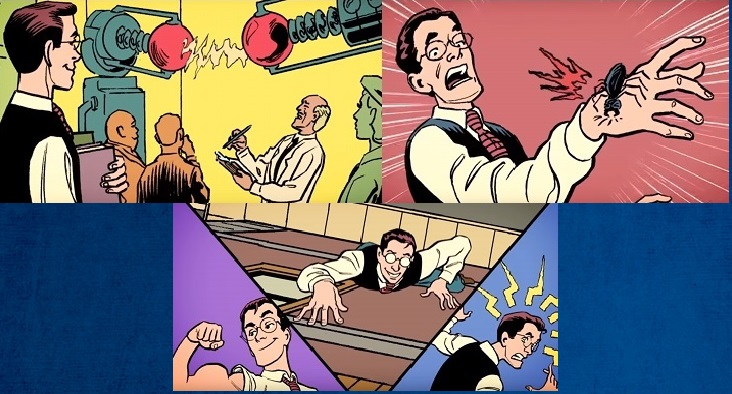
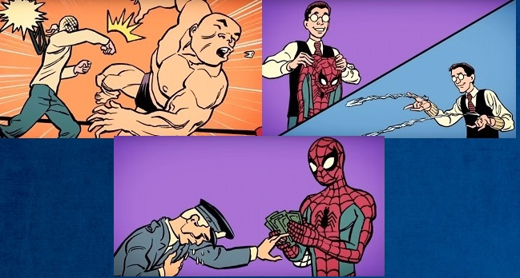
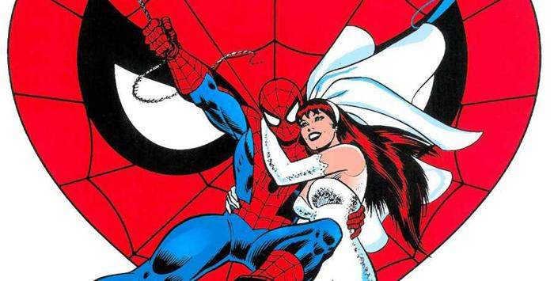
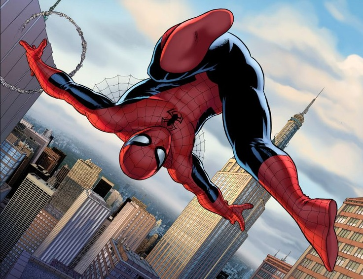

- Sider-Man (1967)
- Spider-Man y sus Sorprendentes Amigos (1981)
- Spider-Man (1994)
- Spider-Man Unlimited (1999)
- Spider-Man La Nueva Serie (2003)
- Espectacular Spider-Man (2008)
- Ultimate Spider-Man (2012)
- Marvel's Spider-Man (2016)
Esta historia comienza en el año 1962, pasada la Era de Oro de los comics (donde nacieron los comics que le dieron vida y forma a la industria) los comics atravesaban una nueva etapa conocida como la Silver Edge. Un joven Stan Lee que ya habia demostrado talento en varias oportunidades, llegando a ocupar el puesto de director en algunos comics de Marvel. Se dio cuneta que no habia ningun super heroe adolescente, no existia un hero, con el que la mayoria de sus lectores jovenes y de clase media pudieran identificarse, es asi que Stan comenzo a trabajar para brindarles ese heroe.
Es cierto que la idea de un hombre insecto no era nueva, pero nunca antes existiria algo como lo que el escritor estaba planeando. Stan Lee afirma que la idea de craer un super hero araña llego a su cabeza al ver correr una araña por la pared, y tras desarrollar el concepto, Stan Lee contacto al legendario artista Jack kirby para que ilustrara al personaje, pero Kirby no etaba disponible para una serie mensual. Por lo que Stan decidio buscar a otro garn artistas, el elegido fue Steve Ditko, quien tras varios bosetos logro crear la clasica y recordada apariencia del perosonaje. Pero el editor de Satn Lee, Martin Goodman no estaba convencido con esta idea... "quien queria a un hombre...araña? la jente odia a las arañas", sin embargo Stan Lee logro convercerlo de incluir al perosnaje en una serie que estaba al borde de la cancelacion... Amazing Adult Fantasy, al final era una serie que moriria, que mas daba si agregaba un nuevo personaje"
Y fue asi, como el 15 de agosto de 1962 el mundo conocio a Peter Parker quien se convertieria en The Amazing Spider-Man!!! el perosnaje tuvo tanto existo que en 1963 reaparecio con su propia serie, en The Amazing Spider-Mna #1, y apartir de aqui, como dicen, todo es historia.
Los padres de Peter Parker murieron en un accidente de avion cuando el era un niño, al despedirse en el aeropurto, le dijeron que fuera bueno con su tia May y su tio Ben. quienes luego lo criaron como su hijo propio. Para Peter su tio Ben era su mejor amigo, no solo pasaba tiempo de calidad con el, sino que ademas tenia un gran sentido del humor y sus muchas horas de chistes y humor, hicieron que Peter desarrollara un aprecio real por las ocurencias.
Peter era un estudiante muy brillante, y si bien sus profesores lo alababan, sus compañareros solo lo veian como un simple raton de biblioteca, y digamos que no era el mejor con las chicas.
Apegandose a una de las tendencias durante la Silver Edge, Stan Lee quizo darle un origen mas cientifico a los poderes del personaje, es 2018 y aun hay personas que no tienen ni idea del origen de Spider-Man, asi que hay les va de volada...
Peter Parker es un adolescente nerd, durante una excursion escolar una araña radioactiva muerde por accidente a Peter, y no, no lo mata ni le da cancer, en cambio le otorga habilidades sobre-humanas entre ellas super fuerza, la capacidad de aderirse a las paredes y sentidos aumentados. Peter necesitaba morlacos, plata, money, dinero pues... asi que se unio a una tipo de WWE, y diseñandose un traje, comenzo a hacer presentaciones mostrando sus increibles y peculiares habilidades. Una noche al salir de una de sus presentaciones, el chico tuvo la oportunidad de detener a un ladron que cruzo por su camino, sin embargo no lo hizo, ese mismo dia al llegar a su casa un policia le cuenta a Peter que un ladron irrumpio en el lugar y mato a su tio Ben, lleno de rabia Peter investiga hasta llegar al escondite del ladron, descubriendo que el asesino de su tio y el ladron que dejo escapar son la misma persona. Peter se responsabiliza por el hecho, y desde ese momento entendio que con un GRAN PODER VIENE UNA GARN RESPONSABILIDAD, jurando que usaria sus poderes para proteger a quien lo necesitara. Peter Parker se habia convertido en el Asombroso Hombre Araña.
 Desde 1962 Spider-Man ha tenido mucahs adaptaciones diferentes a las tiras comics, algunas veces podemos ver a un Peter Parker en la cima del mundo, y en otras ocasiones vemos a un Peter derrotado y completamente lastimado, un Peter que lo ha perdido todo. En fin si bien todas sus historias son bastante buenas, hay en particular algunas que todo verdadero fan del trepamuros en algun momento debe leer, asi que acontinuacion te presento un listado de esas historias...
Partamos de lo básico, del primer cómic. Stan Lee y Steve Ditko presentaron en 1962 la primera historia de Spider-man. En ella se narraba cómo un adolescente atormentado y sometido a acoso escolar era picado por una araña radiactiva, que le confería las habilidades del arácnido. Con estos poderes, el muchacho se convertía en un luchador de wrestling, pero durante una de sus actuaciones dejaba escapar a un ladron. Como consecuencia, el mismo ladrón acababa por matar a su tío Ben. Aquella tragedia haría que el chico jurase que nadie volveria a pasar por algo asi y se convertiría en un superhéroe, a fin de honrar a su tio Ben su culpa. Había nacido El Asombroso Spider-man. Sin este pedazo de papel, no existiria Spider-Man.DESCARGAR Amazing Fantasy #15.
Spider-Man hizo su primera aparición en el comic Amazing Fantasy #15 por allá de 1962. Tiempo después le dieron su propia serie titulada The Amazing Spider-Man en 1963. Amazing Spider-Man es la opción número uno para empezar a leer comics del arácnido, puesto que es la serie principal del personaje. En esta primer historia del trepamuros, veremos a Peter Parker teniendo su primera gran aventura como el amistoso vecino aracnido, pero no llega solo, en este numero lo veremos hacer equipo con la familia mas popular de Marvel, Los 4 Fantasticos! para juntos hacerle frente al Camaleon, el primer super villano de Spider-Man, una hsitoria que no puedes pasar por alto.DESCARGAR The Amazing Spider-Man #1.
Peter Parker descubre que la salud de su tía corre riesgo, por lo que debe evitar sobresaltos. Mientras tanto, el Duende Verde vuelve a combatir con Spider-Man, sin embargo en esta ocasion, y por primera vez la identidad secreta de Peter Parker se ve al descubierto por uno de sus mas grandes enemigos, por lo que tdodo lo que ama se vera amenazado.
La leyenda cuenta que Stan Lee y Romita no tenían planes sólidos para la identidad secreta del Duende Verde, y cuando finalmente se decidieron por Norman Osborn lo hicieron pensando en las consecuencias que podía traerle a Peter Parker, debido a su amistad con Harry. Este arco es importante porque es de los primeros donde Peter comienza a cuestionar su rol de Spider-Man. Además que descubrimos quién está detrás de la máscara del Duende Verde por primera vez, desde su aparicion como villano.DESCARGAR The Amazing Spide-Man #39.
El hijo de J.J. Jameson regresa de una misión espacial trayendo consigo un arma codiciada por los enemigos políticos de los Estados Unidos, es aqui cuando el super villano Rhino es contratado por un enemigo aun mayor para recueperar esta arma, es entonces que Rhino secuestra a Jameson y por supuesto que el heroe de New York entra en acción. ¿Por qué deberías leerlo? Este arco dividido en tres números no sólo muestra la primera aparición de un villano tan clásico como el Rhino, también es el debut de Mary Jane Watson, ¡en la última página! y bueno mas alla de eso es la primer vez que vemos a MJ, quien para muchos fans es y sera siempre el unico y verdadero amor de Peter Parker. Asi que si quieres saber como es que Peter y MJ se conocen debes leer este comic.DESCARGAR The Amazing Spider-Man #42 The Horns of the Rhino.
Más allá de las increíbles aventuras en las que se ve involucrado, Peter ansía una vida normal más que nadie, no obstante debe cargar con la muerte de su tío Ben, algo que podría haber evitado. Muy triste si lo pensamos seriamente. ¿acaso las elecciones no forman parte de nuestra vida? Spider-Man No More nos muestra la naturaleza más pura de Spider-Man, nos muestra que los héroes también pueden deprimirse y anelar una vida normal, Peter Parker esta cansado de llevar esta vida, la vida de un heroe, sacrificar sus sueños y vida, se da cuenta que quizas la ciudad y su seres queridos estarian mejor sin Spider-Man, se pregunta si esa mordida fue una mala jugada del destino, una mordida alazar, porque tener que llevar la carga de la ciudadd sobre sus hombros, asi que Peter decide solo ser Peter Parker, no mas! ¿pero sera esta la desicion correcta?. Un comic que garcias a los dibujos de Jonh Romita Sr. y la perfecta escritura de Stan Lee, han hecho de este comic un gran clasico del aracnido.DESCARGAR The Amazing Spider-Man #50.
Ha vuelto! Spider-Man esta de regreso, pero no tendra una agradable bienvenida a casa, pues desde la prision de la ciudad, los mas grandes villanos que Spider-Man ha ayuda a encerrar organizan un brillante plan para vengarze del heroe, asi es, Electro, Kraven, Buitre, Mysterio, el Hombre de Araña y EL Doctor Octopus unen sus mentes para lograr acabar con Spider-Man. Peter esta apunto de enfrentar su mayor reto hasta el momento derrotar a los Seis Siniestros! Pero ¿Sera este el final para Spider-Man? podra vencer a sus mas garndes villanos unidos. Un numero que por primera en la historia de la industria de super heroes reune a mas de dos villanos en uan solo historia, escrito por Stan Lee e ilustrado por el gran Steve Dikto, este comic marca la primera aparicon del grupo de villanos que pasaria a la historia, como uno de los mas conocidos y temibles de Spider-Man.DESCARGAR The Amazing Spider-Man Annual #1 1964.
Ante los ojos del Hombre Araña, que hacia su llegada, el Duende Verde empuja a Gwen Stacy del puente, el aracnido estirindose al maximo, atrapa a la chica con su telaraña, junto con el fuerte ruido de algo que se rompe, y la encontra muerta... "por favor no me dejes Gwen, no te vallas", un comic que definitivamente marco la vida de muchos fans. Se trata de uno de los sucesos más importantes en la vida de Peter Parker luego del asesinato de su tío Ben y, obviamente, la mordedura de la araña. Lo más importante de esta historia es la prueba de fuego donde Spider-Man pierde a su primer amor, pierde todo lo que mas ha amado en la vida. Peter se da cuenta que es la factura por ser el hero de la ciudad, esa sera siempre su recompeza, perder a las perosonas que mas ama. La trágica muerte de Gwen Stacy marco el final de una era para los comics, pues hasta ese entonces, las novias del héroe siempre se salvaban. La tendencia cambió radicalmente con esta historia, que demostraba que no siempre el heroe podra salvar a los que mas ama.DESCARGAR The Amazing Spider-Man #121.
No estamos ante una historia, propiamente de Spider-Man se trata mas bien del gran crossover que asentó las bases para cómo deberían de ser en las aventuras cruzadas de superhéroes. Las Secret Wars originales contaban cómo el Todopoderoso, una entidad cósmica, secuestraba a héroes y villanos y los arrastraba a un planeta artificial, el Mundo de Batalla, para que lucharan entre sí. Durante el desarrollo de esta guerra, Spider-Man perdió su traje y sus lanzarredes. Por error, utilizó una máquina que creía que servía para generar un nuevo uniforme. Sin embargo, lo que hizo fue liberar a un simbionte con vida propia que trató de fusionarse con Spidey. Pero eso es otra historia. Lo que no lo es, sin embargo, es que después de esto y durante una temporada, Spider-man vestiría el llamado traje negro.DESCARGAR The Amazing Spider-Man Annual #1 Venom 2018.
Este historia, la cual es considerada como uno de los mejores comics de Spider-Man, cuenta cómo después de años tratando de matar a Spider-man, Kraven "el cazador" lo logra... Más o menos. Y lo hace. El villano comienza a vestirse como el héroe y a sembrar el terror en la ciudad de Nueva York, celebrando su victoria sobre su ansiada presa. A lo largo de seis actos, descubríamos que el villano Kraven "El Cazador" se moría. Debido a esto decidía poner fin a sus cacerías a la desesperada. Por ello, optaba por llevar la caza de Spider-Man a un nuevo y perturbado nivel, no contentándose solo con cazarle, sino con usurpar su traje y convertirse en él. En su locura, Kraven trataba de restaurar "su honor", mediante la superación personal, demostrándole al Trepamuros su superioridad moral y física. Y estaría dispuesto a llegar hasta extremos que jamás había cruzado. Pero hasta ahi te cuento...DESCARGAR The Amazing Spider-Man - La Ultima Caceria.
Peter Parker había descubierto que su traje negro era en realidad un simbionte alienígena, que buscaba fundirse con él. Peter logró deshacerse del simbiote, provocando ondas sonoras contra una campana en una iglesia. El estruendo provocó que el simbionte aparentemente muriera, al ser éste tremendamente sensible al sonido. Pero el alien realmente acabó uniendose al periodista Eddie Brock, cuya carrera se había ido a la basura gracias a Spider-man. Brock y el simbionte al unirse se convirtieron en Venom, el enemigo mas despiado y peligroso de Spider-Man, pues el simbionte sabia todo sobre Peter Praker, a quien amaba, sus debilidades, y tanto Eddie como el simbionte querian vengarse de Spider-Man, convirtiendose asi en veneno para la vida de Peter Parker.DESCARGAR The Amazing Spider-Man Venom.
11° La Boda Spider-Man sentó cabeza en 1987, casándose con Mary Jane, tras varias dudas. Nuestro amigo y vecino Trepamuros había crecido. Spider-Man se nos casó, sí, las cosas no serían fáciles. Peter Parker había decidido pedirle matrimonio a MJ y ella terminaría aceptando (en principio dijo que no). La compañía Marvel se comprometía así a casar a uno de sus personajes más importantes. La Boda es uno de esos números históricos del cómic. Los personajes superheroicos imitan la realidad y eso llama la atención tanto del aficionado, como del lector esporádico. Incluso uno se siente invitado a la boda de un personaje tan cercano que parece la boda real de un familiar.
Pero vamos a Peter no le pasan cosas buenas, y sorpresa todo resulta ser un sueño, y seguramente, la mejor parte es el sueño que tiene Peter Parker, es donde sueña una boda a la que acuden sus amigos superhéroes, sus enemigos supervillanos y él mismo va disfrazado de Spider-Man… Y entonces, aparece quien entrega el anillo y no, no es Flash Thompson, sino el fantasma de Gwen Stacy.La historia no es una obra maestra, pero sí un cómic entretenido y, más o menos, imprescindible. Más o menos, porque siempre hubo gente que no se tomó bien que Spider-Man sentase la cabeza. Entre ellos, el editor Joe Quesada, quien años despues que llevaría a cabo el One More Day para concebir un “divorcio” bastante raro.DESCARGAR The Amazing Spider-Man La Boda de Peter Parker.
Civil War fue otro crossover que para Spider-man resultó mortalmente impactante. En este crossover, durante el acta de registro de superhumanos (que implicaba controlar a los superheroes, conocer sus identidades para evitar desastres mundiales), la cual es apoyada por Iron Man y los suyos, y por el otro bando estaba el Capitan America y su equipo (quienes estan en contra del acta de registro) Peter Parker, al ser convencido por Tony Stark revela su identidad al público, asi es todo el mundo sabe quien es Spider-Man. Como resultado, perdió su trabajo en el periódico, se convirtió en un prófugo de la Ley cuando perdió la guerra el bando del Capitán América (al que se unió en medio del conflicto) y, para remate, se convirtió en objeto de la venganza de medio mundo criminal, ahora que sabían quién era y quiénes eran sus seres queridos. Lo que siempre había intentado evitar. Se testigo de uno de los comics mas espectaculares de todo Marvel, que dividio a todos los super heroes del mundo, en algo mas que una simple batalla.DESCARGAR Civil War.
Aprovechando el reboot de numeración de numerosas series que aconteció con Marvel Now!, Marvel optó por dar un giro de tuerca a Spider-Man. El Doctor Octopus logró cambiar su mente con la de su enemigo, tomando el control y las memorias de Spider-Man y convirtiéndose en Peter Parker. Sin embargo, en lugar de convertirse en un villano, Otto Octavius decidió seguir los pasos de su némesis y ser un héroe. Ahora bien, el modo de proceder del nuevo Spider-man era distinto. Tratando de corregir los errores de Parker y ser un "Spider-Man Superior", Octavius comenzó a desarrollar una carrera de superhéroe algo cuestionable y carente de escrúpulos, lo que le hizo ganarse la adversidad de las comunidades superheroicas y criminales. Durante 33 historias vemos como Otto utiliza tanto el cuerpo de Peter Parker como a Spider-Man, mientras observamos como Peter Parker desde la conciencia de su propio cuerpo, intenta sacra a otto. Que sucedera, No mas Peter Parker? o lograra regresar? DESCARGAR The Amazing Spider-Man #700 Superior.
NOTA: Para leer los comics que te deje en la parte de arriba, te recominedo descargar la aplicacion COMIC TRIM, una aplicacion que te permitira leer los comics con la peculiaridad de hacer enfoque de viñeta, te la recomiendo mucho.
| Volumen | Comic |
|---|---|
The Amazing Spider-man Vol.1°Este volumen abarco del comic numero 1° hasta el 441°, desde el año 1963 hasta 1998. En esta epoca logramos ver las mejores historias del personaje y al creacion de la gran varaja de personajes y villanos. |
|
The Amazing Spider-Man Vol.2°Este Volumen intenta dar reinicio a las historias de Spider-Man, para atraer a nuevos lectores, comenzando en el numero 1° y finalizando en el numero 58° repartidos entre los años 1998 y 1993, estos 58 numeros al final fueron incorporados al volumen 1°... dejando asi de lado el reinicio. |
|
The Amazing Spider-Man vol.1°Como dije los numeros del volumen 2° terminaron uniendose a la continuidad del volumen 1°, por lo que el Volumen 1° tuvo una nueva continuidad... comenzando en 1963 y terminando en el 2013 con Superior Spider-Man, desde el numero 1° hasta el 700°, desapareciendo haci el anterior volumen 2°. |
|
The Aamzing Spider-Man Vol.2°Este volumen continua donde se quedo el numero 700° con Otto Octavius en el cuerpo de Spider-Man, del numero 1° al 33° repartidos en los años 2013 al 2014. |
|
The Aamzing Spider-Man Vol.3°Esta historia continua el canon original, comenzando donde termino Superior Spider-Man, con Peter recuperando su cuerpo y llevando la vida que Otto habia forgado mientras tuvo el control, con comics desde el numero 1° hasta el 18°, en los años 2014 a 2015. |
|
The Aamzing Sipider.Man Vol.4°Este volumen continua con al historia base, como siempre. comenzando con el numero 1° y terminando en el 56°, entre los años de 2015 y 2016, mostrandonos a un Spider-Man mas avanzado en cuanto a tecnologia. |
Pero si no quieres sumergirte en mas de 800 comics, estas de suerte!!! Porque Marvel comics acaba de publicar un relanzamiento como parte del “fresco inicio”, y entre estos esta The Amazing Spider-Man, quien estrenar un nuevo Volumen, el Volumen 5°. Los encargados de esta publicación son Nick Spencer escribiendo, Ryan Ottley como artista, Cliff Rathburn a cargo de la tinta y Laura Martin de los colores.
Incluso con un nuevo comienzo para Spider-Man, Spencer dice que los fanáticos deberían prepararse para algo CLASICO con Peter Parker y el mundo que lo rodea; “Creo que mucho de lo que haré es volver a conectar a Peter con algunos elementos clásicos y por excelencia de la historia que los fanáticos y los lectores van a reconocer. Y es emocionante devolver al personaje a lo básico, y ciertamente vamos a honrar las cosas que él ha hecho y construir a partir de ahí “. Spencer y Ottley apuntan a encontrar el equilibrio entre Peter y Spider-Man, y en esta nueva serie se trata de la vida de los dos.
Este nuevo volumen nos trae de vuelta a un Peter Parker con historias bastante similares a las de los 60s, historias simples e increibles, un reinico que sigue manteniendo el canon origianl del personaje pero con un inicio bastante simple, historias para las cuales no necesitas leer los numeros anterios, solo necesitas disfrutar de Spider-Man. Esa mezcla de guion/dibujo tiene como resultado un número… muy bueno. Si soy sincero, si intentamos alejarnos del prisma más subjetivo, este comic es pura esencia del Hombre Araña. Tiene todo lo que se puede esperar y pedir de las aventuras de Peter Parker y su alter ego. Las grietas son producto del contexto y la situación en los que se publica. Pero es un número imparable también: no aburre, no cansa, deja con ganas de más. Y eso es algo muy bueno. DESCARGAR The Amazing Spider-Man #1 2018.
Solo, nunca olvides leer el Amazing Fantasy, la primera aparacion de el cabeza de red, antes de empezar a leer a Spider-Man... recuerda esto y estaras mas que listo para leer a Spider-Man.
Cuando hablamos de un personaje como Spiderman, nos planteamos varias y diferentes preguntas con respecto a su dilatada carrera, que comenzó hace 50 años. De entre ellas, una de las que con más ansiedad se plantea el lector es: ¿Cuántos artistas han realizado sus distintas colecciones aparecidas? La respuesta es extensa, pues Spider-Man es uno de los 3 ó 4 personajes de comics más importantes y conocidos del último cuarto de siglo, lo que se refleja en la edición de seis colecciones de comic-books protagonizadas por él. Estas son: The Amazing Spider-Man (de 1962 hasta la actualidad), The Spectacular Spider-Man (sólo dos números aparecidos en 1968), Marvel Team-Up (de 1971 a 1985, aparecieron 150 números), Giant-Size Spider-Man (aparecieron 6 números en 1974), Peter Parker, The Spectacular Spider-Man (de 1970 hasta la actualidad) y Web of Spider-Man (de 1985 hasta la actualidad). Por ello, los artistas que han realizado algún trabajo para el Trepamuros superan los 170 dibujantes, entre los autores del lápiz y los de la tinta.
Al contrario, la historia de Spiderman ha sido relatada, a través de sus distintas colecciones, por unos pocos y concretos artistas que no llegan a la quincena, y que son los que te mencionare a continuación: Jack Kirby, Steve Ditko, John Romita, Todd McFarlane, entre otros. Unos dibujantes que destacan por su contribución al personaje y por lo extensa que ha sido su colaboración.
Por ello un gran poder artístico conlleva una gran responsabilidad con la historia del cómic: acontinuacion te presento una breve lista de los mejores dibujantes que asumieron el reto de diseñar al personaje creado por Stan Lee desde 1962... los hombres que le han dado vida a Spider-Man.
Spider-Man a lo largo del tiempo ha tenido bastantes adaptaciones... tanto en television, cine e incluso en videojuegos. Desde la iconica serie animada de 1994, hasta la increible serie de Espectacular Spider-Man... Desde Tobey Maguire y su genial Peter Praker, Andrew Garfield y su increible Spider-Man, hasta Tom Holland y su llegada al Universo Cinematografico de Marvel. Una gran historia en la cual tardariamos mucho, por eso acontinuacion te presento un pequeño listado de sus dadptaciones mas conocidas por el publico y los fans en general.

| LAS MAS RECONOCIDAS | ||||
|---|---|---|---|---|
SPIDER-MAN 1994La serie consta de 65 episodios, que se emitieron originalmente entre el 19 de noviembre de 1994 y el 31 de enero de 1998; haciendo de esta la serie más extensa del hombre araña. La serie fue escrita por John Semper Jr y producida por Marvel Films Animation. Esta serie animada es considerada la más exitosa de Spider-Man, en ella se nos muestran historias clasicas sacadas directamente de los comics del trepamuros. |
||||
SPIDER-MANLa franquicia inició en mayo del año 2002 con Spider-Man, que fue dirigida por Sam Raimi y protagonizada por Tobey Maguire; dicha película logró ser tan exitosa que se hicieron dos secuellas mas; las dos primeras películas fueron recibidas con críticas positivas, mientras que la tercera película recibió una respuesta más mixta. En donde evmos un clasico origen de Spider-Man y a villanos como el Duende Verde, Doctor Octtopus y Venom... |
||||
Espectacular Spider-ManCon un Peter Parker que comienza como un adolescente estudiante de instituto, el nuevo show tiene aspectos de angustia adolescente en un mundo moderno. El tono del programa es una combinación de acción de historieta, drama y comedia, la despreocupada comedia chistosa y situaciones divertidas que tanto caracterizan a Spider-Man. Se estrenó el 8 de marzo de 2008 |
||||
The Amazing Spider-ManEn 2010 se anunció que se iba a reiniciar la franquicia, con Marc Webb como director y Andrew Garfield como protagonista. La película fue llamada The Amazing Spider-Man (2012), que fue un éxito en crítica y en taquilla, por lo que se hizo una secuela en 2014, en las cuales pudimos ver una increible adaptacion del personaje, a si como a el Lagarto, Electro, etc... y la muerte de Gwen Stacy. |
||||
Spider-Man HomecomingCon el acuerdo entre Disney (propietaria de Marvel) y Sony de compartir los derechos del personaje, en 2017 fue estrenado el segundo reboot, protagonizado por Tom Holland, titulado Spider-Man: Homecoming ubicado en el Universo cinematográfico de Marvel, apareciendo asi en Captain America: Civil War, Spider-Man: Homecoming, Avengers: Infinity Wa. |
||||
Pero en fin, esta pequeña lista es muy corta y superficial, asi que si quieres saber mas afondo sobre el trayecto y las adaptaciones de Spider-Man a traves del tiempo te invito a que veas el video que te estare dejando aqui abajo, donde podras ver todas las adaptaciones que ha tenido el cabeza de red...
Stanley Martin Lieber, más conocido como Stan The Man Lee, nacido en Manhattan, Nueva York el 28 de diciembre de 1992, falleció el pasado 12 de noviembre en California, con 95 años de edad. Dedicó una buena parte de esos años a crear personajes e historias que nos acompañan aún el día de hoy, entre ellas por su puesto la de Spider-Man, la cual fue probablemente el estallido de creatividad más grande en toda la historia de la cultura pop.
Stan Lee siempre quedará en el recuerdo....
¿Qué sería de Spiderman sin su sentido arácnido? y lo mas importante ¿Que seria del mundo sin Spider-Man? Todo héroe se define por sus poderes. Pero ¿qué diferenciaba a Stan Lee del resto de los mortales?: el poder de crear y compartir un mundo repleto de historias donde la creencia de hacer el bien por la sociedad y no por el propio interés estaban a la orden del día. Donde los héroes tenían épicas batallas contra villanos que harían lo que fuera para destruir el mundo con un único objetivo, hacer el mal… El mal ganó la batalla ese lunes, pero como pasa en los mejores cómics los superhéroes nunca mueren. Stan Lee siempre quedará en el recuerdo de aquellos que se criaron con sus viñetas, porque al igual que creó y reunió a Los Vengadores, ha creado un legado, una leyenda…
Gracias por todo Stan Lee, al final las estrellas pertenecen al cielo... QDEP GENIO!!!
"EL UNICO PROBLEMA ES EL TIEMPO, TAN SOLO DESEO QUE HUBIERA MAS TIEMPO"- STAN LEE